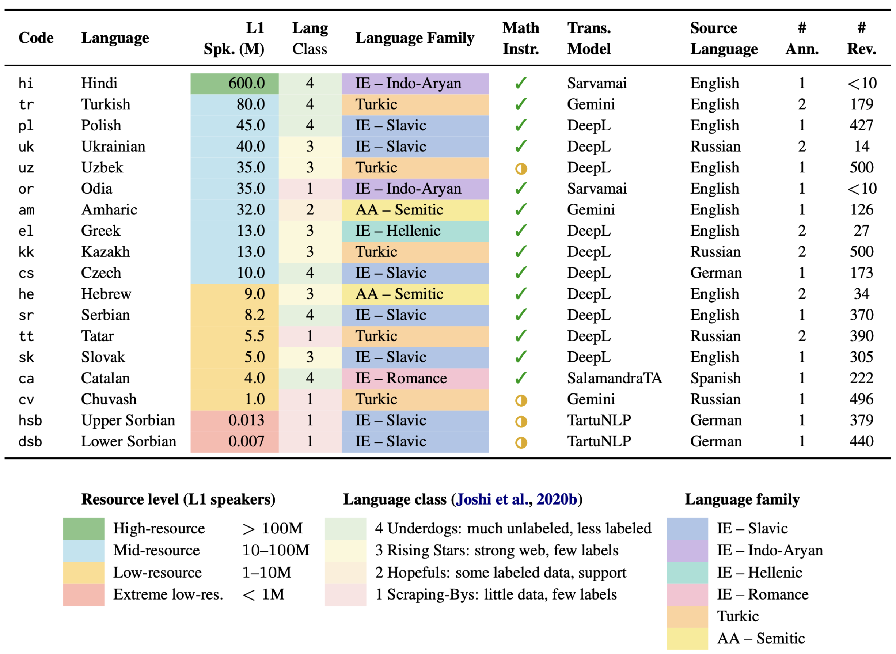
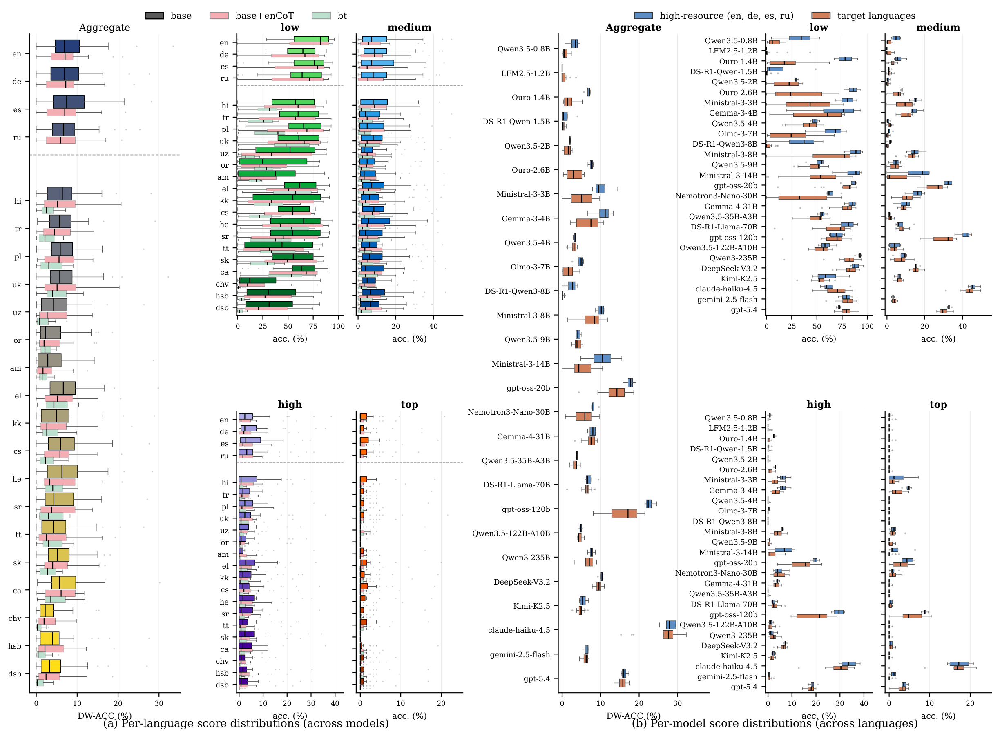
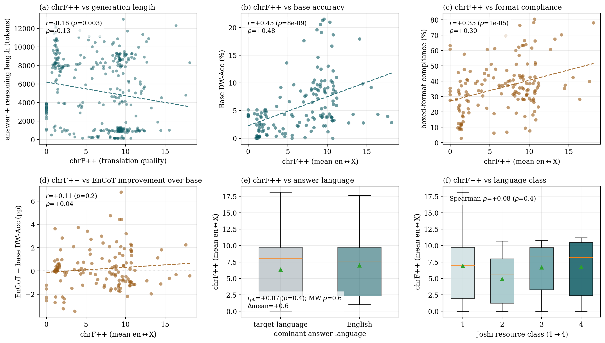

1Technical University of Munich (TUM) 2Munich Center for Machine Learning (MCML) 3Munich Data Science Institute (MDSI) 4Independent Researcher 5Applied AI Institute 6Charles University 7Nazarbayev University 8Inria 9Indian Institute of Technology, Kharagpur (IIT Kharagpur) 10German University of Digital Science
* Correspondence: daryna.dementieva@tum.de
Can LLMs reason about mathematics in Українськаuk ?
Mathematical reasoning has become a central task for evaluating and tuning reasoning Large Language Models (LLMs), yet existing benchmarks remain heavily biased toward high-resource languages, with English and Chinese dominating both pre-training corpora and evaluation suites. The recently released PolyMath dataset represents a significant step forward, yet its coverage is still limited to 18 only high-resource languages.
To address this gap, we introduce PluraMath, an extension of PolyMath to 18 additional underrepresented languages spanning 6 language families — ranging from mid-resource to extreme low-resource settings. We constructed the dataset through a human-curated pipeline, where native speakers thoroughly validated pre-computed translations. Using PluraMath, we benchmark 27 reasoning LLMs across four model scales — small, mid-size, large, and closed-source ensembles — probing multilingual mathematical reasoning under diverse linguistic conditions.
Our fine-grained analysis confirms a persistent gap in mathematical reasoning performance between high-resource and underrepresented languages, with stronger results largely associated with better instruction-following ability. We fully open-source our dataset, data acquisition pipeline, and evaluation framework, with the goal of lowering the barrier to multilingual benchmark development for underrepresented communities.

Coverage spans Indo-European (Slavic, Indo-Aryan, Hellenic, Romance), Turkic, and Afro-Asiatic (Semitic) families — deliberately including languages with tiny speaker populations and minimal web presence, such as Upper and Lower Sorbian.
Each language contains 500 problems (125 per difficulty level), inherited from PolyMath and translated through three stages. The full pipeline — scripts, annotation interface, and written guidelines — is open-sourced so that any community can extend the benchmark to their language.
The strongest available translation system per language produces initial drafts: DeepL, Gemini, Sarvamai, SalamandraTA, or TartuNLP — from English, Russian, German, or Spanish sources.
Native speakers thoroughly validate and correct every translation. All annotators were fully informed about the goals of the project and worked with written instructions.
Automated and manual checks of formula integrity, followed by a final error analysis, guarantee that mathematical content survives translation intact.
We evaluate 27 reasoning LLMs with difficulty-weighted accuracy (DW-Acc), alongside \boxed{} format compliance, generation length, and the dominant answer language. Language resource class strongly correlates with benchmark ranking — Spearman ρ = 0.646 (p = 0.0038).

Average high-resource → target DW-Acc gap is +2.15 points, up to +4.86 for Chuvash and Amharic. Greek and Polish are nearly on par (+0.67).
Small open models fluctuate wildly across language groups; Claude-Haiku-4.5 and GPT-5.4 stay remarkably stable across all 22 evaluated languages.
The best models produce correct answers with substantially shorter reasoning traces; output length correlates negatively with translation quality (chrF++).
Translation quality moderately correlates with math accuracy (+0.45) and instruction following (+0.35) — models that follow task requirements do so across tasks.
Human evaluation across 6 criteria shows frequent mid-reasoning switches to English, less coherent derivations, and reasoning left unfinished within the token budget.
En-CoT and back-translation prompting yield only limited improvements for most models — the gap reflects capability, not prompt design.
Each cell reports DW-Acc (%). Best and second-best per column are highlighted. After each language block: macro-average, mean ± std generation length (tokens), and dominant answer language (tl = target language, en = English).
| Model | en |
de |
ru |
es |
Avg | Len | Lang | hi |
tr |
pl |
uk |
uz |
or |
am |
el |
kk |
cs |
he |
sr |
tt |
sk |
ca |
cv |
hsb |
dsb |
Avg | Len | Lang |
|---|---|---|---|---|---|---|---|---|---|---|---|---|---|---|---|---|---|---|---|---|---|---|---|---|---|---|---|---|
| Open-weight — small (≤4B) | ||||||||||||||||||||||||||||
| Qwen3.5-0.8B | 4.7 | 3.1 | 0.7 | 3.7 | 3.1 | 2288±1432 | tl | 0.4 | 0.4 | 0.5 | 1.4 | 0.1 | 1.2 | 0.1 | 1.7 | 0.4 | 1.8 | 2.4 | 0.5 | 0.7 | 1.3 | 0.3 | 0.3 | 0.4 | 0.8 | 0.8 | 2238±780 | en |
| LFM2.5-1.2B | 0.0 | 0.0 | 0.0 | 0.0 | 0.0 | 3485±1213 | en | 0.0 | 1.0 | 3.6 | 0.0 | 0.5 | 0.0 | 0.9 | 0.0 | 0.0 | 0.0 | 0.0 | 1.0 | 0.0 | 0.0 | 2.1 | 0.0 | 0.0 | 0.0 | 0.5 | 2660±835 | en |
| Ouro-1.4B | 7.3 | 6.9 | 5.7 | 7.2 | 6.8 | 1477±532 | tl | 2.9 | 3.3 | 5.2 | 1.4 | 0.5 | 0.4 | 0.6 | 2.1 | 0.4 | 2.6 | 1.7 | 1.4 | 1.4 | 2.3 | 4.8 | 0.3 | 0.7 | 1.0 | 1.8 | 1608±372 | en |
| R1-Distill-Qwen-1.5B | 4.0 | 0.2 | 0.2 | 0.5 | 1.2 | 2691±1058 | en | 0.1 | 0.3 | 0.1 | 0.0 | 0.5 | 0.1 | 1.0 | 0.2 | 0.2 | 1.1 | 0.0 | 0.9 | 0.5 | 0.1 | 0.5 | 0.8 | 0.2 | 0.1 | 0.4 | 3032±832 | en |
| Qwen3.5-2B | 2.0 | 2.1 | 2.0 | 2.1 | 2.1 | 1932±151 | tl | 0.5 | 1.8 | 2.6 | 2.3 | 1.4 | 0.7 | 0.3 | 2.3 | 1.1 | 2.1 | 2.0 | 2.1 | 0.8 | 2.2 | 2.3 | 0.0 | 0.4 | 0.1 | 1.4 | 1982±146 | tl |
| Ouro-2.6B | 8.2 | 6.7 | 7.5 | 7.8 | 7.5 | 1587±544 | en | 4.4 | 5.7 | 0.9 | 5.8 | 1.8 | 1.8 | 0.3 | 5.5 | 0.6 | 5.3 | 3.0 | 4.2 | 1.2 | 4.7 | 5.7 | 1.1 | 2.7 | 2.0 | 3.1 | 1600±453 | en |
| Ministral-3-3B | 9.1 | 7.9 | 9.9 | 14.5 | 10.3 | 1421±761 | tl | 7.8 | 4.0 | 8.4 | 8.7 | 1.2 | 1.3 | 0.0 | 8.2 | 6.1 | 7.3 | 7.2 | 2.2 | 3.8 | 6.7 | 9.7 | 2.2 | 3.9 | 2.8 | 5.1 | 1634±667 | en |
| Gemma-3-4B | 13.3 | 10.8 | 6.7 | 11.6 | 10.6 | 1262±616 | tl | 8.4 | 6.4 | 9.0 | 10.5 | 7.6 | 2.5 | 5.3 | 10.7 | 3.6 | 9.5 | 7.4 | 9.9 | 4.1 | 8.2 | 10.3 | 2.1 | 3.2 | 3.3 | 6.8 | 1512±841 | tl |
| Qwen3.5-4B | 2.9 | 3.5 | 3.5 | 3.2 | 3.3 | 1912±188 | tl | 2.6 | 3.1 | 3.8 | 3.1 | 3.0 | 1.8 | 2.8 | 3.6 | 3.2 | 3.1 | 4.0 | 3.6 | 3.0 | 3.7 | 3.7 | 1.4 | 1.2 | 1.4 | 2.9 | 1942±187 | tl |
| Open-weight — mid-size | ||||||||||||||||||||||||||||
| OLMo-3-7B-Think | 5.1 | 4.7 | 2.7 | 5.6 | 4.5 | 1891±318 | en | 1.8 | 3.3 | 4.6 | 3.8 | 0.1 | 1.4 | 0.1 | 2.8 | 1.3 | 2.5 | 2.4 | 0.2 | 0.3 | 2.3 | 4.0 | 0.1 | 0.5 | 0.2 | 1.8 | 1960±187 | en |
| R1-0528-Qwen3-8B | 4.1 | 3.1 | 0.0 | 2.2 | 2.4 | 3181±489 | tl | 0.0 | 0.6 | 0.7 | 0.1 | 0.3 | 0.0 | 0.0 | 0.0 | 0.0 | 0.4 | 0.0 | 0.0 | 0.0 | 0.2 | 0.8 | 0.0 | 0.1 | 0.1 | 0.2 | 3177±429 | en |
| Ministral-3-8B | 10.7 | 8.7 | 9.6 | 10.9 | 10.0 | 1514±769 | en | 9.3 | 9.7 | 11.8 | 9.4 | 8.1 | 1.5 | 2.7 | 9.3 | 5.9 | 8.7 | 10.5 | 9.7 | 7.0 | 7.9 | 9.7 | 1.4 | 5.7 | 5.9 | 7.5 | 1544±747 | en |
| Qwen3.5-9B | 3.7 | 3.6 | 5.0 | 4.5 | 4.2 | 3617±782 | tl | 4.9 | 3.5 | 3.7 | 5.4 | 4.1 | 3.4 | 3.4 | 5.0 | 5.1 | 4.1 | 5.2 | 3.7 | 4.6 | 4.7 | 3.6 | 3.3 | 2.5 | 2.5 | 4.0 | 3083±581 | tl |
| Ministral-3-14B | 9.4 | 11.7 | 4.8 | 15.5 | 10.3 | 1559±663 | tl | 8.5 | 4.7 | 5.9 | 3.9 | 3.5 | 0.1 | 0.0 | 9.1 | 8.0 | 9.3 | 10.5 | 3.3 | 2.3 | 3.1 | 4.4 | 2.2 | 5.5 | 4.3 | 4.9 | 1810±549 | en |
| gpt-oss-20b | 17.6 | 15.8 | 19.2 | 18.0 | 17.7 | 2847±1665 | en | 15.8 | 12.4 | 12.1 | 18.6 | 10.2 | 15.2 | 9.3 | 16.7 | 16.0 | 17.3 | 16.6 | 11.8 | 16.3 | 14.9 | 12.7 | 4.4 | 13.6 | 12.6 | 13.7 | 2585±1277 | en |
| Nemotron3-Nano-30B | 9.5 | 7.7 | 7.8 | 7.7 | 8.2 | 2207±1796 | en | 7.4 | 7.9 | 8.6 | 6.5 | 3.9 | 0.9 | 2.0 | 8.9 | 4.3 | 7.6 | 9.7 | 6.6 | 4.3 | 5.3 | 6.6 | 1.9 | 3.5 | 2.5 | 5.5 | 1608±1461 | en |
| Gemma-4-31B | 6.6 | 7.4 | 8.7 | 8.6 | 7.8 | 1664±534 | tl | 8.4 | 9.1 | 8.7 | 8.5 | 7.5 | 6.4 | 7.6 | 7.1 | 7.6 | 6.9 | 8.5 | 8.6 | 6.8 | 7.4 | 7.6 | 3.3 | 5.3 | 5.0 | 7.2 | 1724±485 | tl |
| Qwen3.5-35B-A3B | 3.7 | 3.6 | 3.9 | 4.2 | 3.9 | 1880±241 | tl | 2.9 | 3.7 | 3.8 | 4.4 | 4.7 | 2.3 | 4.1 | 4.1 | 3.7 | 3.2 | 3.8 | 3.7 | 3.3 | 3.8 | 3.8 | 1.9 | 2.8 | 2.8 | 3.5 | 1919±224 | tl |
| Open-weight — large | ||||||||||||||||||||||||||||
| R1-Distill-Llama-70B | 6.8 | 5.9 | 9.4 | 6.5 | 7.2 | 1678±667 | tl | 6.7 | 6.5 | 7.7 | 8.6 | 6.2 | 5.2 | 1.3 | 7.4 | 6.8 | 6.4 | 6.3 | 8.3 | 6.9 | 6.6 | 6.1 | 6.6 | 5.1 | 6.1 | 6.4 | 1703±626 | en |
| gpt-oss-120b | 24.6 | 22.7 | 22.0 | 21.5 | 22.7 | 2590±1607 | tl | 19.6 | 12.8 | 12.2 | 21.0 | 13.6 | 14.6 | 12.9 | 19.1 | 21.3 | 18.7 | 21.5 | 13.0 | 20.5 | 16.6 | 12.5 | 8.1 | 17.9 | 17.6 | 16.3 | 2328±1267 | en |
| Qwen3.5-122B-A10B | 4.7 | 4.9 | 5.4 | 4.2 | 4.8 | 3447±971 | tl | 4.0 | 4.2 | 3.9 | 5.1 | 4.3 | 5.2 | 4.1 | 5.8 | 4.9 | 4.3 | 4.8 | 4.3 | 5.0 | 5.1 | 4.4 | 3.9 | 4.2 | 4.3 | 4.5 | 2991±666 | tl |
| Qwen3-235B-A22B | 6.6 | 7.6 | 8.6 | 7.7 | 7.6 | 3269±1264 | tl | 7.0 | 6.1 | 5.8 | 8.1 | 5.5 | 6.3 | 4.5 | 7.6 | 8.0 | 7.1 | 9.0 | 6.2 | 8.2 | 8.0 | 6.2 | 3.3 | 7.9 | 7.2 | 6.8 | 2888±846 | tl |
| DeepSeek-V3.2 | 10.6 | 10.4 | 9.3 | 10.3 | 10.1 | 1751±675 | tl | 10.0 | 9.8 | 11.0 | 8.8 | 8.5 | 9.2 | 8.7 | 10.3 | 8.9 | 9.4 | 10.4 | 10.3 | 7.8 | 10.1 | 9.7 | 9.0 | 9.2 | 9.8 | 9.5 | 1806±605 | tl |
| Kimi-K2.5 | 6.9 | 4.9 | 4.5 | 5.8 | 5.5 | 1804±580 | tl | 3.7 | 6.7 | 5.9 | 5.2 | 4.4 | 5.0 | 4.4 | 6.1 | 4.9 | 4.0 | 5.0 | 5.0 | 3.9 | 5.1 | 4.9 | 2.7 | 4.9 | 5.0 | 4.8 | 1878±499 | tl |
| Closed-source | ||||||||||||||||||||||||||||
| Claude-Haiku-4.5 | 33.5 | 27.7 | 25.3 | 28.2 | 28.7 | 848±401 | tl | 28.1 | 29.1 | 26.3 | 32.3 | 26.3 | 18.6 | 28.6 | 29.8 | 28.9 | 27.6 | 28.4 | 27.1 | 26.3 | 18.1 | 30.2 | 15.3 | 27.6 | 27.0 | 26.4 | 934±414 | tl |
| Gemini-2.5-Flash | 6.2 | 6.7 | 5.4 | 6.9 | 6.3 | 3636±4226 | tl | 6.0 | 6.7 | 6.9 | 6.5 | 7.0 | 5.7 | 6.9 | 5.3 | 6.8 | 5.5 | 6.3 | 6.3 | 6.2 | 6.1 | 5.7 | 6.3 | 5.3 | 4.5 | 6.1 | 3891±4364 | tl |
| GPT-5.4 | 17.3 | 16.3 | 15.4 | 15.8 | 16.2 | 317±249 | tl | 16.1 | 16.5 | 16.2 | 16.5 | 17.3 | 13.4 | 14.2 | 15.3 | 16.3 | 15.6 | 17.5 | 16.0 | 14.8 | 14.5 | 16.8 | 14.7 | 15.2 | 15.0 | 15.7 | 371±261 | tl |
Per-difficulty-level results, prompting ablations (base / En-CoT / back-translation), API costs, and reasoning-length analyses are provided in the paper appendices.
To test whether gains in reasoning are tied to underlying translation ability, we run a case study on a subset of models — in both reasoning and non-thinking modes — on translation tasks from the FLORES+ dev split and the LLMs with Limited Resources shared task, and correlate chrF++ translation quality with every axis of our math benchmark.

@misc{dementieva2026pluramath,
title = {PluraMath: Extending Mathematical Reasoning Evaluation Beyond High-Resource Languages},
author = {Daryna Dementieva and Nikolay Babakov and Kathy H{\"a}mmerl and
Ilseyar Alimova and Jind{\v{r}}ich Libovick{\'y} and
Shu Okabe and Miras Baisbay and Lukas Edman and
Abrorkhon Inomkhujaev and Antonia Karamolegkou and
Mateusz Lango and Volkan {\"O}zer and Nikola Selic and
Subhankar Swain and Tsedeniya Kinfe Temesgen and
Galit Bary Weisberg and Alexander Fraser},
year = {2026},
eprint = {2607.05992},
archivePrefix = {arXiv},
primaryClass = {cs.CL},
doi = {10.48550/arXiv.2607.05992},
url = {https://arxiv.org/abs/2607.05992},
}
Please also cite the original PolyMath benchmark (Wang et al., 2025).
We express our enormous gratitude to all annotators and supporters of the project. Firstly, we are grateful for our collaboration with the WITAJ-Sprachzentrum and thank Anita Hendrichowa, Marko Měškank, and Kryštof Peršín, in particular, for their annotations of the Upper Sorbian and Lower Sorbian splits. Secondly, the translation to Catalan has been promoted by the Aina Project. We are also grateful to Šimon Kapusta for his help in checking the Slovak translations. The work of the authors on the Czech and Slovak splits was supported by the project CZ.02.01.01/00/23_020/0008518 of the Czech Ministry of Education, Youth and Sports. Finally, we warmly thank Alexander Antonov for the annotation of the Chuvash split.
This work was co-funded by the European Union (ERC, EPICAL, 101141712 and ERC, NG-NLG, 101039303). Views and opinions expressed are however those of the author(s) only and do not necessarily reflect those of the European Union or the European Research Council. Neither the European Union nor the granting authority can be held responsible for them.